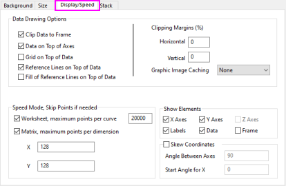
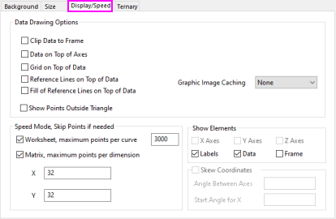
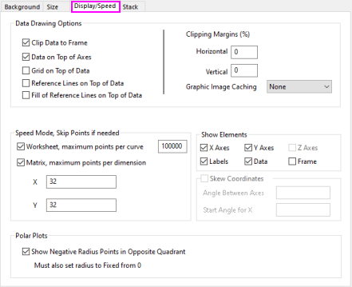
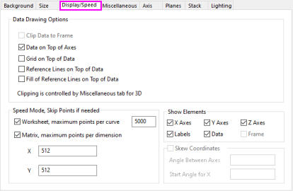

Weitere relevante Videos:Schriftgröße in Grafiken mit mehreren Layer korrigieren
Weitere relevante Videos:Schriftgröße in Grafiken mit mehreren Layer korrigieren
 Weitere relevante Videos:Schriftgröße in Grafiken mit mehreren Layer korrigieren
Weitere relevante Videos:Schriftgröße in Grafiken mit mehreren Layer korrigieren
Die Registerkarte Anzeige auf Ebene des Layers des Dialogs Details Zeichnung bietet Optionen zum Einstellen der Skalierung des Textes, der Anzeige der Achsen, Achsenbeschriftungen, Beschriftungen und Daten sowie spezifischem Datenzeichenverhalten.
|  |  |
| Registerkarte Anzeige und Performance allgemein | Registerkarte Anzeige und Performance für Ternärdiagramm |
|  |  |
| Registerkarte Anzeige und Performance für Polardiagramm | Registerkarte Anzeige und Performance für 3D-Diagramm |
| Nur innerhalb des Rahmens |
Wenn dieses Kontrollkästchen aktiviert ist, verbirgt die Option Daten, die über den Layerrahmen hinausgehen, minus den Prozentsatz, der unter Rand ausschneiden angezeigt wird. Der Layerrahmen besteht aus dem Umfang der Achsenskalierungen.
Hilfe beim Abschneiden von Textbeschriftungen und anderen Grafikobjekten finden Sie unter Objekt beschneiden. |
||
|---|---|---|---|
| Daten oberhalb von Achsen |
Anzeigen von Diagrammen und Symbolen über auf den Layerachsen Die meisten Vorlagen haben ihre Standardeinstellung, um Daten hinter den Achsen (deaktiviert) anzuzeigen. Beachten Sie, dass das gleiche Bedienelement durch Rechtsklick auf die Diagrammachse verfügbar ist. |
||
| Gitternetz oberhalb von Daten |
Anzeigen von Achsengitternetzlinien über Diagrammen und Symbolen Beachten Sie, dass das gleiche Bedienelement durch Rechtsklick auf die Diagrammachse verfügbar ist. |
||
| Referenzlinien oberhalb der Daten |
Anzeigen von Referenzlinien über Diagrammen und Symbolen Beachten Sie, dass das gleiche Bedienelement durch Rechtsklick auf die Diagrammachse verfügbar ist. |
||
| Zeige Punkte außerhalb des Rahmens |
Dieses Kontrollkästchen steht nur zur Verfügung, wenn das Quelldiagramm ein Ternärdiagramm ist. Aktivieren Sie dieses Kontrollkästchen, um die Datenpunkte außerhalb der Dreiecksachse zu zeigen. |
||
| Ausschnitt Ränder (%) |
Der horizontale und vertikale Rand wird abgeschnitten. |
||
| Grafikzwischenspeicher |
Der Grafikzwischenspeicher kann immer verwendet werden, wenn ein 2D-Diagrammlayer neu gezeichnet werden muss, ohne aktualisiert zu werden. Wenn zum Beispiel ein Diagrammfenster von einem anderen Fenster überlagert und dann wieder in den Vordergrund geschoben wird oder wenn die Größe des Diagrammfensters verändert wird.
|
|
Hinweis: Wenn Sie die Größe Ihres Diagramms im Raster-Speichermodus ändern, kann die Anzeige des Diagramms "pixelig" erscheinen. Wenn dies geschieht, wählen Sie Fenster: Aktualisieren im Origin-Menü, um die Anzeige wiederherzustellen. |
|
Negative Radiuspunkte im gegenüberliegenden Quadranten
Muss Radius haben, um bei Null anzufangen |
Wenn Ihre Daten negative Radiuswerte besitzen, aktivieren Sie dieses Kontrollkästchen, um negative Radiuspunkte im gegenüberliegenden Quadranten zu zeigen. Bitte beachten Sie, dass der Radius in diesem Fall bei 0 anfangen muss. |
|---|
Neben dem Grafikzwischenspeicher können Sie auch Origins Entwurfsmodus verwenden, um die Neuzeichnungsgeschwindigkeit Ihrer Diagrammlayer zu erhöhen. Im Entwurfsmodus lässt sich die Anzahl der im Diagrammlayer angezeigten Datenpunkte steuern. Diese Option ist sehr nützlich, wenn Sie mit großen Datensätzen arbeiten, wobei die Verringerung der Anzahl der gezeichneten Punkte entweder die Neuzeichnungsgeschwindigkeit erhöht oder Störungen in der Zeichnung reduziert.
Wenn Entwurfsmodus aktiviert ist, wird das Layersymbol in rot und ein Wasserzeichen mit Entwurfsmodus ist eingeschaltet wird in dem Layer angezeigt. Das Wasserzeichen taucht nicht auf, wenn Sie das Diagramm ausdrucken, kopieren oder exportieren.
Für Diagramme, die aus Arbeitsblattdaten erstellt wurden:
Für Diagramme, die aus Matrixdaten oder Daten einer virtuellen Matrix erstellt wurden:
|
Hinweis:
|
| X-Achsen/Y-Achsen/Z-Achsen |
Deaktivieren Sie dieses Kontrollkästchen, um die jeweiligen Achsen des Layers zu verbergen. Aktivieren Sie es, um die jeweiligen Achsen zu zeigen. |
|---|---|
| Beschriftungen |
Verbergen Sie alle Achsentitel, Pfeile, Textbeschriftungen, Formen und Objekte in dem Layer. Zum Anzeigen der Beschriftungen in der Druckausgabe muss das Kontrollkästchen Beschriftungen vor dem Drucken aktiviert werden. |
| Daten |
Verbergen Sie alle Diagramme in dem Layer. Zum Anzeigen der Daten in der Druckausgabe muss das Kontrollkästchen Daten vor dem Drucken aktiviert werden. |
| Rahmen |
Dieses Kontrollkästchen legt fest, ob ein Layerrahmen angezeigt werden soll. Im Fall von 3D-Diagrammen ist diese Option deaktiviert. |
Nur verfügbar für 2D-Diagramme in kartesischen Koordinaten (allgemein Anzeige/Geschwindigkeit). Aktivieren Sie das Kontrollkästchen und geben Sie einen ganzen Zahlwert in die begleitenden Felder ein.
| Winkel zwischen Achsen |
Interner Winkel zwischen X- und Y-Achsen |
|---|---|
| Anfangswinkel für X |
Positive Werte drehen die X-Achse gegen den Uhrzeigersinn. |